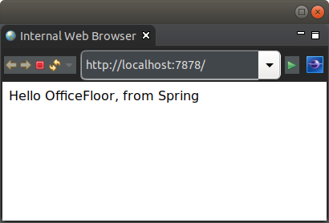

Spring HTTP Server Tutorial
This tutorial demonstrates the next stage of the OfficeFloor migration path: replacing Spring Boot as the application container with OfficeFloor itself while keeping all existing Spring beans.
If you have been following the Spring Boot starter tutorials, your application currently looks like this:
@SpringBootApplicationlaunches Spring Boot, which hosts OfficeFloor as a handler interceptor- YAML files in
officefloor/rest/declare your REST endpoints - Spring beans are injected into your service methods as plain parameters
This tutorial shows how to flip the container: OfficeFloor becomes the host and Spring becomes a SupplierSource — a provider of dependency-injected objects. Your YAML REST files, your service classes, and your Spring beans all carry over unchanged. Only the startup wiring changes.
The following simple output is provided via a Spring bean injected into a service function, with the result rendered by Thymeleaf:

Spring
In terms of Inversion of Control, Spring focuses heavily on Dependency Injection. This makes Spring a very useful library of pre-built objects. In actuality Spring has provided great abstract APIs across various different vendors for various key services (e.g. Spring Data).
However, Spring is still primarily only a Dependency Injection engine. It does not provide Continuation Injection nor Thread Injection for modeling functionality and execution of your applications.
Therefore, rather than re-invent the wheel for these great APIs, OfficeFloor enables integrating Spring in as a SupplierSource (supplier of objects for dependency injection).
Supplier
Similar to suppliers providing items to a business, a SupplierSource supplies objects to OfficeFloor dependency injection. This is a convenient means for Dependency Injection frameworks, such as Spring, to provide their objects to OfficeFloor.
The Spring supplier is configured via officefloor/suppliers/Spring.yml:
source: SPRING
properties:
configuration.class: net.officefloor.tutorial.springhttpserver.SpringBootConfiguration
The SpringSupplierSource is configured via it's SPRING alias.
The OfficeFloor managed object that Spring depends on is configured in officefloor/objects/World.yml:
managed-object:
class: net.officefloor.tutorial.springhttpserver.World
Similar to Spring Boot applications, a configuration class loads the Spring beans. The configured class is as follows:
@SpringBootApplication
public class SpringBootConfiguration {
@Bean
public Other other() {
return SpringSupplierSource.getManagedObject(null, Other.class);
}
}
This provides the following single Spring bean for dependency injection via class path scanning:
@Component
public class HelloBean {
@Autowired
private Other other;
public String getIntroduction() {
return "Hello " + this.other.getName() + ", from Spring";
}
}
The SpringSupplierSource interogates all the registered Spring beans and makes them available for auto-wiring within OfficeFloor.
Therefore, the service function that uses the Spring bean is no different to any other OfficeFloor dependency injection:
public class Template {
public HelloBean getTemplate(HelloBean bean) {
return bean;
}
}
Spring depending on OfficeFloor
In the previous section, the Spring bean required a dependency to be injected. This dependency is provided by an OfficeFloor ManagedObjectSource. This enables:
- OfficeFloor to depend on Spring beans
- Spring beans to depend on the richer OfficeFloor ManagedObjectSource instances
Looking at the Spring Boot configuration class again:
@SpringBootApplication
public class SpringBootConfiguration {
@Bean
public Other other() {
return SpringSupplierSource.getManagedObject(null, Other.class);
}
}
The dependency is provided from the SpringSupplierSource. This enables Spring factory methods to create beans from ManagedObjectSource instances within OfficeFloor.
From the object configuration above, this resolves to the following:
public class World implements Other {
@Override
public String getName() {
return "OfficeFloor";
}
}
Note that exposed objects from OfficeFloor must be via an interface. The interface for this tutorial is:
public interface Other {
String getName();
}
Typically, Spring depending on OfficeFloor objects should be used sparingly. In most cases, dependency should be single direction of OfficeFloor depending on Spring beans. However, the above reverse in dependency direction is available for more complex situations (e.g. staged migration of Spring beans into ManagedObjectSource instances to avoid big bang changes).
REST endpoint
The GET / endpoint is configured via a REST YAML file. The service function fetches the Spring bean model, which is then passed to Thymeleaf for rendering:
getTemplate:
class: net.officefloor.tutorial.springhttpserver.Template
next: render
render:
procedure: Thymeleaf
resource: greeting
Thymeleaf template
The Thymeleaf template renders the model returned by the service function. \${model.introduction} resolves to HelloBean.getIntroduction():
<!DOCTYPE html>
<html>
<body>
<p th:text="${model.introduction}">placeholder</p>
</body>
</html>
Building the application
Due to Spring Boot generating meta-data about the application to run, the following should be used to build the executable jar:
<plugin>
<groupId>org.springframework.boot</groupId>
<artifactId>spring-boot-maven-plugin</artifactId>
<configuration>
<mainClass>net.officefloor.OfficeFloorMain</mainClass>
<classifier>exec</classifier>
</configuration>
<executions>
<execution>
<goals>
<goal>repackage</goal>
</goals>
</execution>
</executions>
</plugin>
This ensures Spring Boot can generate the necessary meta-data, while still allowing OfficeFloor to manage the execution. It also keeps the original jar (via the classifier) to allow using as a dependency in larger applications.
Unit Test
Suppliers are integrated into OfficeFloor, so the application can be tested just like any other WoOF application:
@RegisterExtension
public MockWoofServerExtension server = new MockWoofServerExtension();
@Test
public void springHello() throws Exception {
// Send request for dynamic page
MockHttpResponse response = this.server.send(MockHttpServer.mockRequest("/"));
// Ensure request is successful
assertEquals(200, response.getStatus().getStatusCode(), "Request should be successful");
assertTrue(response.getEntity(null).contains("Hello OfficeFloor, from Spring"), "Incorrect response");
}
Next
The Spring Web MVC tutorial demonstrates running existing Spring Web MVC @Controller endpoints within OfficeFloor while adding YAML REST procedures alongside them.